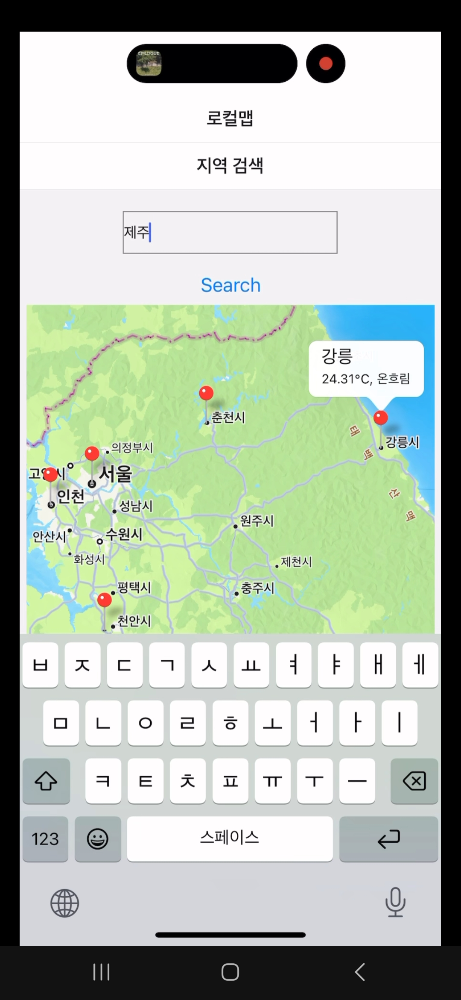

오픈소스 프로젝트 날씨예보 앱 입니다.
깃 저장소 URL : https://github.com/Lemon0825/WeatherApp.git
주제 : 날씨예보 앱
프로젝트 목표 : 사용자가 앱 실행시 현재시각의 날씨정보와 특정 지역의 날씨 검색, 알람설정을 통해 설정한 시간에 날씨정보에 대한 알림기능 구현
-참여 팀원-
최효신 - 기본 날씨정보 제공 기능 구현, 최대 5일 후까지의 날씨정보 제공 기능 구현
오태호 - 알람설정 및 알림 기능 구현, 설정한 알람 삭제, 수정기능 구현
황창희 - 지역검색 후 그 지역의 날씨정보 실시간 제공 기능 구현
-요약 기능-
어플리케이션을 시작했을 때 나오는 화면 하단의 버튼 터치할 시 다음 화면으로 넘어갑니다.
앱 실행시 가장 먼저 뜨는 화면. 여기서 현재 시각의 날씨와 최대 4일 후까지의 날씨정보를 알 수 있습니다.
탭바를 이용해 알람 설정 화면으로 이동. 이 화면에서 알람 설정가능.
로컬맵 탭으로 이동하면 먼저 지도가 출력되고 마커를 터치하면 각 지역별로 현재 날씨 정보를 알 수 있습니다.

이 화면에서 날씨정보를 알고 싶은 지역을 검색할 수 있습니다.
검색한 지역의 날씨정보 제공합니다.
문의처 : sinto825@naver.com